Lejre
Fürstenresidenz
Hallenhäuser
Schiffssetzungen


Lejre
| Navidaten: 55.61543 11.96911 oder: Orehøjvej 4B, 4320 Lejre |
König Rolf (Krake) legte seine Hauptstadt an den Ort, der Lejre heißt. Das ist ein Ort in Dänemark, und es war eine große, starke Burg, ansehnlicher und prächtiger als irgendeine andere... So steht es in der Sage um Rolf Krake, und daher wird für wahrscheinlich gehalten, dass Lejre die Heimat von Dänemarks ältestem Königsgeschlecht, den Skjoldunger (Schildjungen), war. Skjold, Frode, Roar, Helge und also Rolf Krake hatten ihren Königshof hier. Es muss wohl ein wahrer Kern der Sage zugrunde liegen, denn Ausgrabungen um Gammel Lejre am Lejre Å und Kornerup Å, 1 km nördlich der Bahnhofssiedlung haben 1986 Spuren einer riesigen Halle freigelegt, deren Abmessungen wirklich eines Königs würdig waren. Das 48,5 m lange und 11,5 m breite Haupthaus mit einer Innenhöhe um 10 m ist mit seinen gut 500 m2 das größte, bekannte wikingerzeitliche Haus. Der Grundplan ist jetzt an der Stelle markiert und eine Infotafel (mit kurzer Erklärung in deutscher Sprache) angebracht, auf der eine Zeichnung das Aussehen des Gebäudes verdeutlichen soll. Allein der zentrale Raum um die Feuerstelle war ca. 200 m2 groß. Um die Halle herum lagen 4-5 sehr viel kleinere Häuser, die Serviceaufgaben im Zusammenhang mit dem enormen Haushalt gehabt haben werden, von dem die Halle zeugt.

Funde von Gegenständen aus dieser und anderen Ausgrabungen sind zahlreich und enthalten viele wertvolle Stücke, die auf großen Reichtum hindeuten. Es handelt sich um Keramik, Schmuck, Knochenkämme, Spindelgewichte, Wetzsteine, Scherben von Trinkgläsern, Waffen, Münzen und vieles mehr. Die bisherigen Ausgrabungen umfassen nur 5% der eigentlichen Wohnplatzfläche. Aber selbst auf dieser bescheidenen Grundlage lässt sich mit Sicherheit sagen, dass Lejre kein ganz gewöhnlicher Wikingerwohnplatz war. Allein die Tatsache, dass sich die vielen Häuser in ihrer Konstruktion völlig gleichen, deutet daraufhin, dass sie in mehr als einem Sinn des Wortes denselben Architekten hatten. Mit anderen Worten: Das Werk eines Großherren!
Lejres strategische Lage in der Landschaft war auch ideal für einen Machthaber, da er von hier den Verkehr auf den Bächen bis tief ins Landesinnere Seelands kontrollieren konnte. Direkt südlich von Gammel Lejre teilt sich der Kornerup Å in einen östlichen und einen südlichen Zweig. Der östliche Zweig passiert bei Højby Snekkehavs Ager und Snekkehavsmose, was ja ein Zeichen dafür ist, dass Schiffe bis hierher gelangten. Im Süden liegt das große Langvad Å-System, das mit einem für möglich gehaltenen, gut 1,5 m höheren Wasserstand im Roskilde Fjord, sogar sehr viel Wasser führte. Sein Verlauf läßt sich leicht an Brorup vorbei, bis zum Kimmerslev Sø verfolgen, der einen Abfluß nach Süden zum Køge Å hat. Nach Westen war es vermutlich möglich, vom Køge Å aus, eventuell über Eine Schleppstelle oder einen kurzen Kanal, an der Burg Humleore vorbei zum Haraldsted Sø, Ringsted Å und das ganze Suså-System in die Gegend von Næstved, und weiter nach Westen auf den Bächen an Fjenneslev vorbei und zur Mündung in den Großen Belt bei Trelleborg zu gelangen.
Ob es aber wirklich der König von Dänemark war, der seinen Königssitz hier hatte, oder ob es nur ein König von Seeland war, ist ungewiss. Zu Beginn des achten Jahrhunderts, wo die Funde andeuten, dass Lejre Großherrensitz geworden ist, geschehen viele Dinge in Dänemark, die darauf hindeuten, dass zumindest das Land westlich des Großen Belt im Begriff ist, von einem mächtigen Herrscher geeint zu werden. An der Südgrenze werden die ersten Teile des Danewerk errichtet. Auf Samsø wird der 800 m lange Kanhavekanal durch die schmalste Stelle der Insel gegraben. Er muss einen militärischen Zweck im Zusammenhang mit der Kontrolle der Schiffahrt im Großen Belt und der Århusbucht erfüllt haben. Und schließlich entstehen in diesen Jahren die großen Handelsstädte; zuerst Ribe, dann Haithabu. Aber Seeland und Schonen können insofern noch immer außerhalb dieser Gemeinschaft gestanden haben, als es einen jütländischen König in Jelling und einen seeländischen in Lejre gegeben haben mag.
Ende des 10. Jahrhunderts eint Harald Blauzahn ganz Dänemark. Das sagt er selbst auf dem großen Jelling-Stein. Vielleicht findet er den Königshof in Lejre zu klein und zu unmodern. Vielleicht möchte er für alle Zeit die Erinnerung an jene Vorzeit auslöschen, gegen die er rebelliert, wie andere Despoten vor und nach ihm. Jedenfalls baut er nach seiner dramatischen Bekehrung auf Isøre die Dreifaltigkeitskirche mit zugehörigem Königshof auf der höchsten Erhebung am Ende des Roskilde Fjords, weit von Lejre entfernt, während Lejre nie eine Kirche bekommt. So kann Svend Aggesen, der Mitte des 12. Jahrhunderts Historiker war, gleichzeitig mit Saxo Grammaticus den Nachruf auf die ausgestorbene Stadt schreiben: Er (König Skjold) wurde in Lejre getötet, das in jener Zeit der berühmteste Königshof war, während es nun in der Nähe der Stadt Roskilde beinahe zu den am wenigsten geachteten Dörfern zählt und kaum noch Einwohner hat.
Auf einer Landzunge zwischen zwei Wasserläufen direkt östlich vom Dorf befinden sich die Überreste mehrerer Schiffssetzungen. Die NNW-SSO gerichtete Schiffssetzung, Tingstenene (Thingsteine) genannt, liegt auf der Landzunge zwischen der Kornerup Au und der jetzt ausgetrockneten Lejre Au. Trotz erheblicher Zerstörung sind die beiden Reihen großer Steine, die die Form eines ca. 86 m langen Schiffes haben, erhalten geblieben (27 Steine, bis zu ). Alte Stiche, wie Ole Worms Prospekt der Monumenta Danica von 1643 zeigen, dass an dieser Stelle ursprünglich bis zu sechs Schiffssetzungen gelegen haben. Weiter nach Norden hin und westlich der ausgetrockneten Lejre Au hatte eine Schiffssetzung gelegen, die ein Ausmaß von 100 Schritten gehabt haben soll, während eine andere östlich der Kornerup Au vorhanden gewesen ist. Nördlich der großen Schiffssetzung findet sich ein großer einzelner Stein, der "Dronning Margrethes Sten". Dieser wird einer dieser verschwundenen Schiffssetzungen zugeordnet.

Tingstenene waren über einem Begräbnisplatz angelegt, von dem bislang fünfzig Körperbestattungen und vier Brandgräber untersucht worden sind. Mehrere dieser Gräber sind bemerkenswert, wie ein Grab mit den Skeletten von zwei Männern, von denen der eine mit gebundenen Händen und Füßen enthauptet war. Andere Gräber zeichnen sich durch reiche Beigaben von vergoldeten Bronzebeschlägen und Riemenspangen für Strumpfbänder, geschmiedete Werkzeuge (Hammer, Feile und Zange), Holzschreine, Thorshämmer u.a. aus. Bei vielen Gräbern wurden Gruben mit Feuerresten, Tongefäßscherben und Speiseopfern gefunden.
Dicht bei der Schiffssetzung liegt der restaurierte Grydehøj (Kesselhügel), in dem anlässlich einer im Jahre 1958 durchgeführten Untersuchung eine umfangreiche Brandschicht mit feinen Goldfäden von kostbar gewebten Tuches gefunden wurde. Das in dem ursprünglich mindestens 4 m hohen Hügel befindliche Grab gehört der jüngeren Eisenzeit an (nach 400n.Chr.).
Verschiedene große Hügel um Lejre, z.B. Hyldehøj (Hollunderhügel) nördlich der Schiffssetzung und Ravnshøj (Rabenhügel) nordöstlich davon enthalten vielleicht ebenso vornehme Beisetzungen.
Bereits 1643 fand sich in dem Werk vom Begründer der dänischen Runenforschung Ole Worm "Danicorum Monumentorum Libri Sex, Hafniae, 1643, S. 22" diese Skizze von Gammel Lejre:
Die Zeichnung beschreibt die einzelnen archäologischen Funde, wie die Grabhügel, die Schiffssetzungen, Hünengräber usw. und zeigt Lejre von Westen. Der Zeichner hatte wahrscheinlich den Mysselhøj, westlich der Langhausfunde gelegen, als Aussichtspunkt.
Am südlichen Ortsausgang von Gl. Lejre befindet sich das im März 2016 neu eröffnete Museum "Sagnkongernes Lejre".
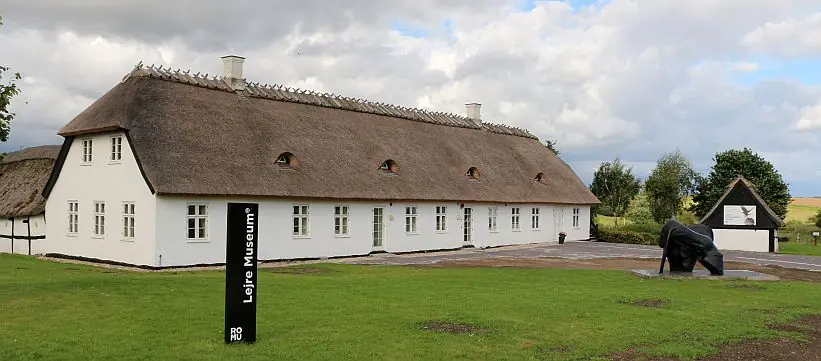
Das Museum erzählt die jahrhunderalte Geschichte von Lejre, in dem auch das Königreich Dänemark vor ewigen Zeiten seine Anfang nahm. In einer kleinen, aber ansprechenden Ausstellung wird neben zahlreichen orignalen Fundstücken - siehe unten - auch der sogenannte "Lejre-Odin" gezeigt.
Diese plastische Darstellung wird meist als Gottvater Odin gedeutet, der nur ein Auge hat und von seinen beiden Raben, Huginn und Muninn, auf seinem Götterthron flankiert wird. Dieser sensationelle Fund wurde am 02.09.2009 durch den Hobbyarchäologen Tommy Olesen mit seinem Metalldetektor in Gammel Lejre, im Bereich der Hallenhäuser auf dem Mysselhøjgård, gemacht. Die Figur ist aus Silber, wiegt nur 9 Gramm, ist 1,75 cm hoch, 1,98 cm breit, hat eine Tiefe von 1,25 cm und wird in die Wikingerzeit um 950 n. Chr. datiert. Der Fund ist nun dauerhaft in der Ausstellung zu sehen.
Eine kleine Auswahl dieser in dem Museum ausgestellten Funde, die aus den verschiedensten zeitlichen Epochen stammenden, habe ich bei meinem letzten Besuch in dem Museum am 30.08.2016 fotografiert:
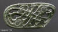 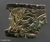 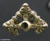 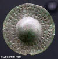 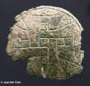 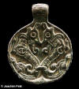 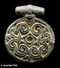 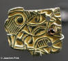


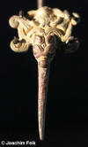 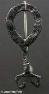 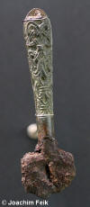


Im Museum ist für umgerechnet ca. 60,00 (448 DKK) das 563 Seiten starke Buch von dem langjährigen AusgräberTom Christensen "Lejre Bag Myten, De arkæologiske udgravninger"erhältlich, das in der 2. Auflage 2016 erschien. Es beschreibt in dänischer Sprache die Ausgrabungen in Lejre über die letzten 25 Jahre mit sehr vielen Zeichnungen, Fotos und Abbildungen die Historie und den Ausgrabungskampagnen. Im hinteren Buchteil ist ein etwas über 200 Seiten starker Katalog mit Bild- und Textbeschreibungen zu den Ausgrabungsbefunden und -funden.
Dieses Fundstück mit der Katalognummer 247 (S. 530/531) zeigt z.B. ein Fragment eines möglichen Schreinbeschlages aus Bronze. Es war wohl ursprünglich dreieckig und leider ist oben ein Stück abgebrochen. Es ist dekoriert mit einem Tier im Jellingstil als erhabenes Relief. Man sieht in den unteren Ecken zwei Bohrlöcher. Die Rückseite ist glatt. Auf der Frontseite sind noch Spuren einer heute rötlich-matt erscheinenden Vergoldung zu erkennen. Wenn sich der Winkel nach oben so fortgesetzt hat, hatte der Beschlag eine ursprüngliche Höhe von ca. 10 cm. Das Fragment ist ca. 50 mm hoch und unten 69 mm breit, bei einer Stärke von 3 mm. Es wird in die Wikingerzeit auf ca. 895 - 950 n. Chr. datiert.
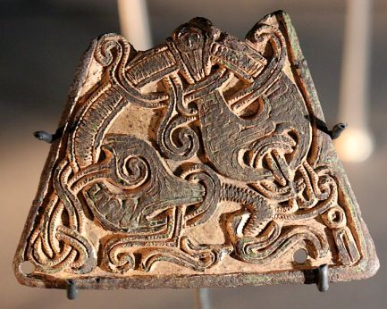
Vom Museum / Parkplatz aus geht ein angenehmer Weg zu den etwa 500 m entfernten Schiffssetzungen. In der entgegengesetzten Richtung gelangt man zu den ca. 250 m entfernten Langhaus Markierungen. Dies wird auf diesem Luftfoto von Ole Malling, Roskilde/Lejre Museum, am deutlichsten.
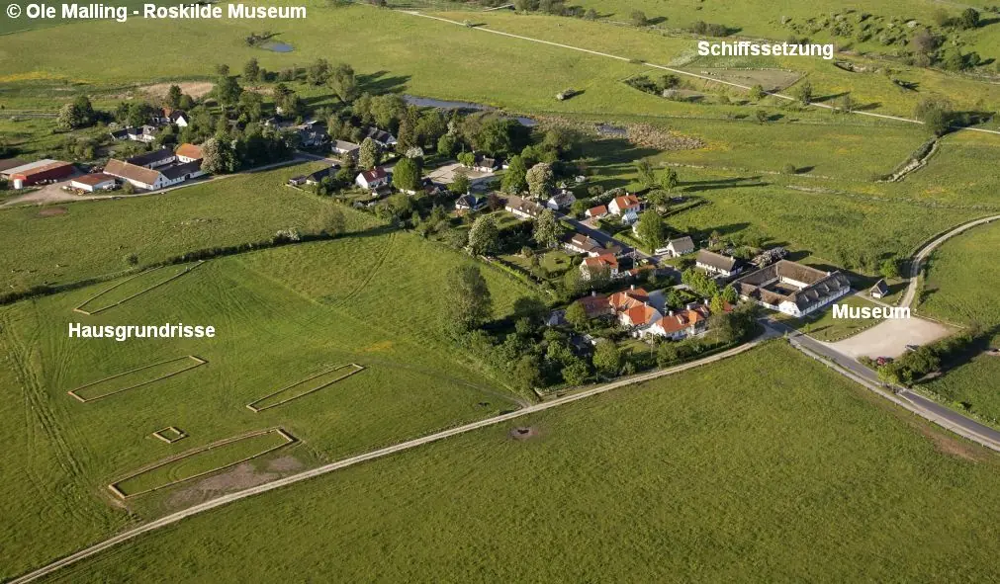
Die Grundrisse der fünf Hallenhäuser sind inzwischen in der Landschaft als niedrige Erhebungen nachgezeichnet worden, wie es auf den von mir am Boden gemachten Fotos zu sehen ist.
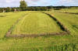 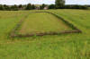 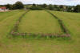 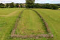 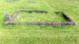


Im Museum ist auch ein Holzmodell eines der Hallenhäuser, im typischen "Trelleborg-Stil" zu sehen:
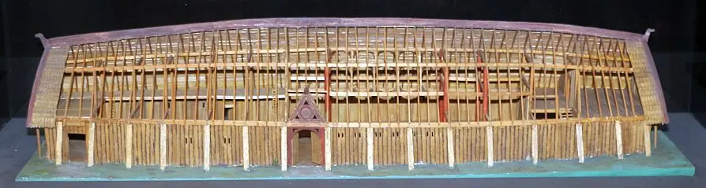
Diese Fotos habe ich auch am 30.08.2016 aufgenommen, genau wie diese von den beiden Schiffssetzungen, von den es ursprünglich wohl mindestens vier große Setzungen gab. Die bessere der beiden noch erhaltenen Schifssetzungen
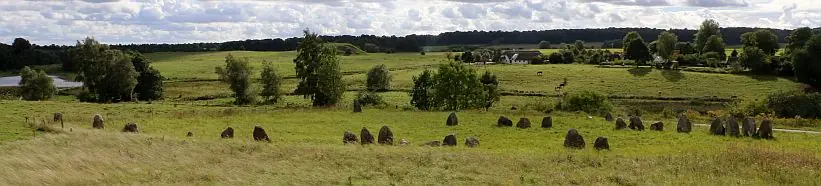
hatte eine Länge von ca. 100 m
Der entsprechende Eintrag zu der >Schifssetzung in "Fund og Fortidsminder" ist hier verlinkt.